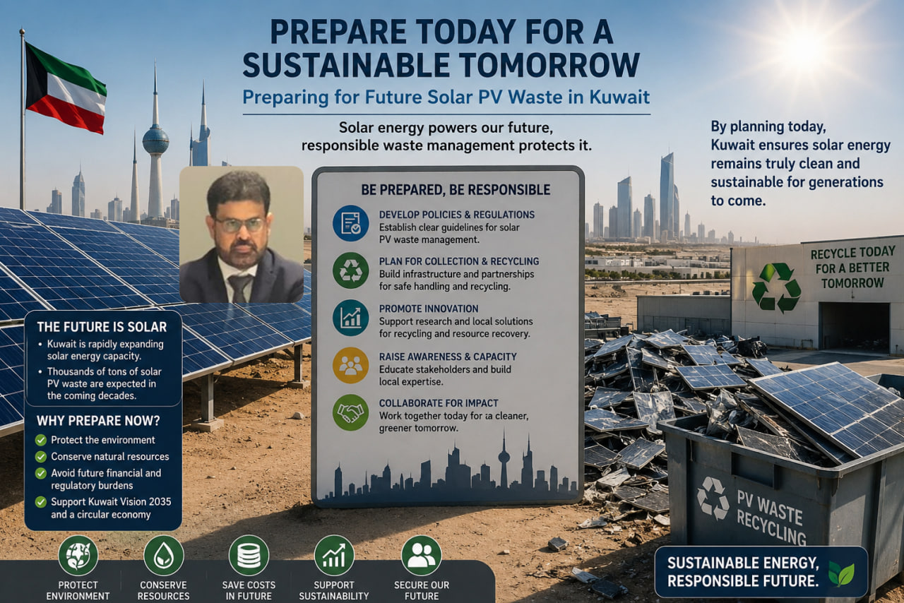

A Challenge That Is Coming Quickly
Many Arab countries are still struggling with general solid waste management. This challenge will grow as the region expands photovoltaic solar projects. The waste from these panels will become more visible over the coming years as the first major installations approach the end of their useful life.
Kuwait installed the first phase of the Shagaya station at about 10 MW, equal to roughly 40,000 solar panels, around 2015. In less than 10 years, those panels will begin turning into waste. Kuwait is also expected to add around 4,500 MW before 2030, which could mean more than 18 million photovoltaic panels.
The same issue applies at a larger scale in Saudi Arabia, where plans for more than 50,000 MW could create more than 180 million waste panels over the next two decades.
From Pollution Risk to Resource Recovery
The question is whether the region will wait until deserts and open lands are burdened with tonnes of this waste, or start where advanced countries have already reached: by building legislation, collection mechanisms, and recycling systems.
Solar panel waste can be handled through several important paths:
- Build collection infrastructure that improves the recovery of valuable metals, especially silver and other recoverable materials.
- Connect with global markets to support trading and processing channels that strengthen local collection efforts.
- When waste accumulates, direct it into suitable smelting and energy recovery processes instead of burying it in the desert.
Early planning can turn this expected waste stream into an industrial opportunity for recycling, energy recovery, and circular value creation.
Comments
Share your comment with Green Cycle Platform. Comments are published after approval by the team.